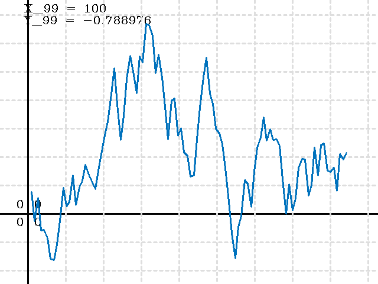
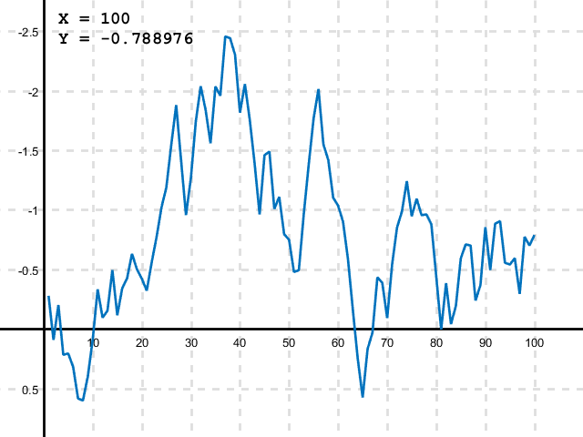

Plot demo
Demonstrates OpenCV and MATLAB plotting.
Contents
Data
try, rng(5); end % fixed PRNG seed for reproducible results y = cumsum(rand(100,1) - 0.5); x = (1:numel(y)).'; assert(isvector(x) && isvector(y) && numel(x) == numel(y));
Options
sz = [640 480]; % [400 300] is the minimum
xl = [min(x) max(x)] + [-0.1 0.1]*(max(x) - min(x));
yl = [min(y) max(y)] + [-0.1 0.1]*(max(y) - min(y));
lw = 2;
ln = true;
lc = [0 114 189];
bg = [255 255 255];
fg = [0 0 0];
gc = [222 222 222];OpenCV
p = cv.Plot2d(x, y); p.PlotSize = sz; p.MinX = xl(1); p.MaxX = xl(2); p.MinY = yl(1); p.MaxY = yl(2); p.PlotLineWidth = lw; p.NeedPlotLine = ln; p.PlotLineColor = lc; p.PlotBackgroundColor = bg; p.PlotAxisColor = fg; p.PlotTextColor = fg; p.PlotGridColor = gc; img = p.render();
img = cv.cvtColor(img, 'BGR2RGB'); if ~mexopencv.isOctave() imshow(img, 'Border','tight', 'InitialMagnification',100) else imshow(img) end set(gcf, 'Name','OpenCV')
fname = fullfile(tempdir(), 'plot_opencv.png'); cv.imwrite(fname, img); disp(['Saved to: ' fname])
Saved to: C:\Users\Amro\AppData\Local\Temp\plot_opencv.png
MATLAB/Octave (HG1)
hFig = figure('Name','MATLAB', 'Position',[200 200 sz]); hAx = axes(); hLine = line(x, y, 'LineWidth',lw, 'LineStyle','-', 'Color',lc/255); if ~ln set(hLine, 'LineStyle','none', 'Marker','.', 'MarkerSize',12); end if ~mexopencv.isOctave() %HACK: some Octave graphics backends ignore axislocation=origin % also setting gridalpha turns grid lines black ax_props = {'Position',[0 0 1 1], 'GridAlpha',1.0}; else ax_props = {}; end set(hAx, 'XLim',xl, 'YLim',yl, 'LineWidth',2, ... 'Color',bg/255, 'XColor',fg/255, 'YColor',fg/255, ... 'GridColor',gc/255, 'GridLineStyle','--', 'XGrid','on', 'YGrid','on', ... 'Box','off', 'TickLength',[0 0], 'YDir','reverse', ... 'XAxisLocation','origin', 'YAxisLocation','origin', ax_props{:}); if false set(hAx, 'XTickLabel', '', 'YTickLabel', '', 'FontSmoothing', 'off'); set(hFig, 'GraphicsSmoothing', 'off'); end text(0.1, 0.98, sprintf('X = %g\nY = %g\n', x(end), y(end)), ... 'Units','normalized', 'Interpreter','none', 'Color',fg/255, ... 'FontName','FixedWidth', 'FontSize',14, 'FontWeight','bold', ... 'VerticalAlignment','top', 'HorizontalAlignment','left');
fname = fullfile(tempdir(), 'plot_matlab1.png'); print(hFig, fname, '-dpng', '-r0'); disp(['Saved to: ' fname]);
Saved to: C:\Users\Amro\AppData\Local\Temp\plot_matlab1.png

MATLAB (HG2)
if ~mexopencv.isOctave() hFig = figure('Name','MATLAB'); hFig.Position(3:4) = sz; movegui(hFig, 'center'); hAx = axes(); hAx.Position = [0 0 1 1]; hLine = line(x, y); hLine.LineWidth = lw; hLine.LineStyle = '-'; if ~ln hLine.LineStyle = 'none'; hLine.Marker = '.'; hLine.MarkerSize = 12; end hLine.Color = lc/255; hAx.XLim = xl; hAx.YLim = yl; hAx.Color = bg/255; hAx.XColor = fg/255; hAx.YColor = fg/255; hAx.GridColor = gc/255; hAx.GridAlpha = 1.0; hAx.LineWidth = lw; hAx.GridLineStyle = '--'; hAx.XGrid = 'on'; hAx.YGrid = 'on'; hAx.Box = 'off'; hAx.TickLength = [0 0]; hAx.XAxisLocation = 'origin'; hAx.YAxisLocation = 'origin'; hAx.YDir = 'reverse'; if false hAx.XTickLabel = ''; hAx.YTickLabel = ''; hAx.FontSmoothing = 'off'; hFig.GraphicsSmoothing = 'off'; end hTxt = text(0.1, 0.98, '', 'Units','normalized'); hTxt.String = sprintf('X = %g\nY = %g\n', x(end), y(end)); hTxt.Interpreter = 'none'; hTxt.Color = fg/255; hTxt.FontName = 'FixedWidth'; hTxt.FontSize = 14; hTxt.FontWeight = 'bold'; hTxt.VerticalAlignment = 'top'; hTxt.HorizontalAlignment = 'left'; % capture [im,map] = frame2im(getframe(hAx)); if isempty(map) args = {im}; else args = {im, map}; end fname = fullfile(tempdir(), 'plot_matlab2.png'); imwrite(args{:}, fname); disp(['Saved to: ' fname]); end
Saved to: C:\Users\Amro\AppData\Local\Temp\plot_matlab2.png